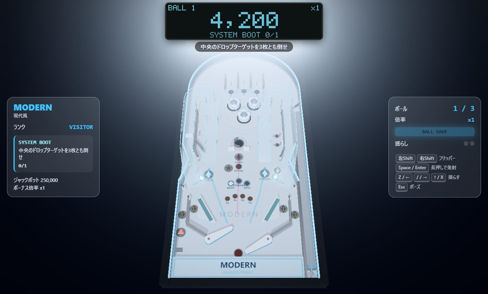
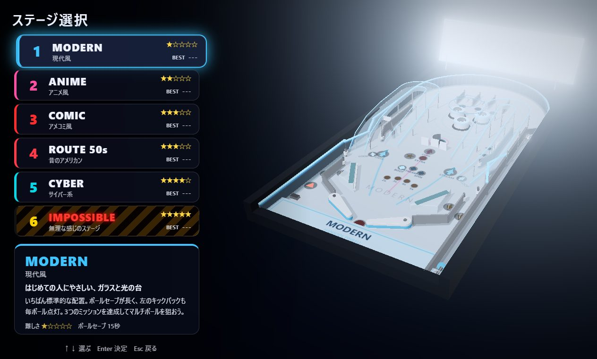
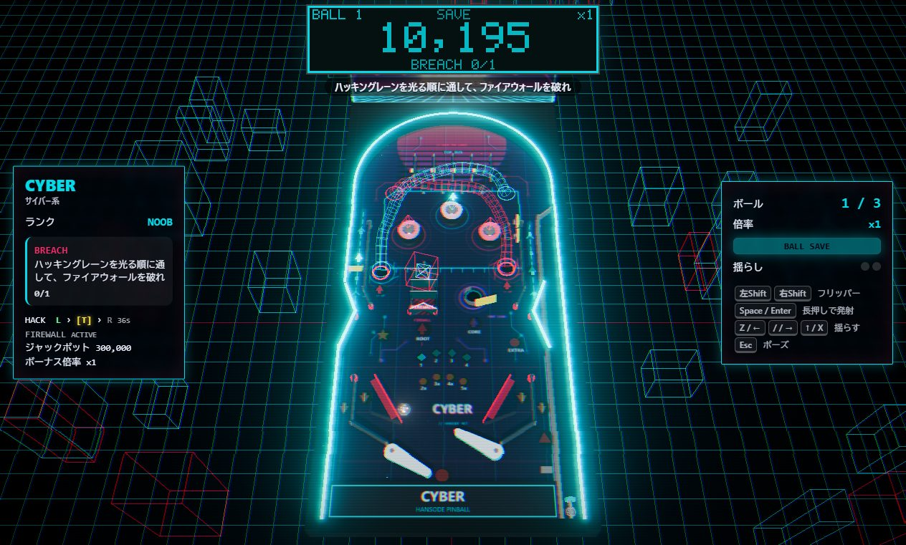

HAPOMU / Happy Omurice Games
HANSODE PINBALL
6つの台で遊ぶ 3Dピンボール
Windows版 v1.0.0対応OS：Windows 10 / 11（64bit） ファイルサイズ：約108MB（無料）
スクリーンショット



操作
左Shift右Shift フリッパー ／ Space 発射（長押しで強く）／ Z/↑ 台を揺らす（ゲームパッドにも対応）
はじめて起動するとき
「WindowsによってPCが保護されました」と出たら、「詳細情報」→「実行」で起動できます。